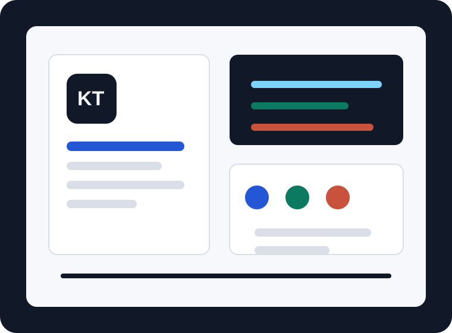

Home, About, Learning, Solutions, Projects, and Contact pages with shared navigation.
Day 2 portfolio website
Suman Kapri is building KapriTech in public.
KapriTech is my personal brand, learning base, and public journey as I grow from basics into real web development, practical websites, and useful digital products.

Day 2 wrap-up
The foundation is now a real multi-page portfolio.
Brand assets, project visuals, founder photo, social preview, and skill icons.
Publish real project links, add JavaScript interactions, and write founder diary updates.
Start here
A simple website that can grow with the brand.
What KapriTech provides
Simple digital help for people who need a clear online start.
Portfolio and personal brand websites
Clean pages for students, learners, creators, and early professionals who need a public identity.
Small business web presence
Basic websites that explain what a business does, how to contact it, and why people should trust it.
Learning-first build process
Every project becomes practice, documentation, and a stronger foundation for the next version.
Ready for Day 3
Next, KapriTech should publish and prove.
The next useful move is to make each project clickable, document what was learned, and add small JavaScript features that improve the experience.
Connect with KapriTech